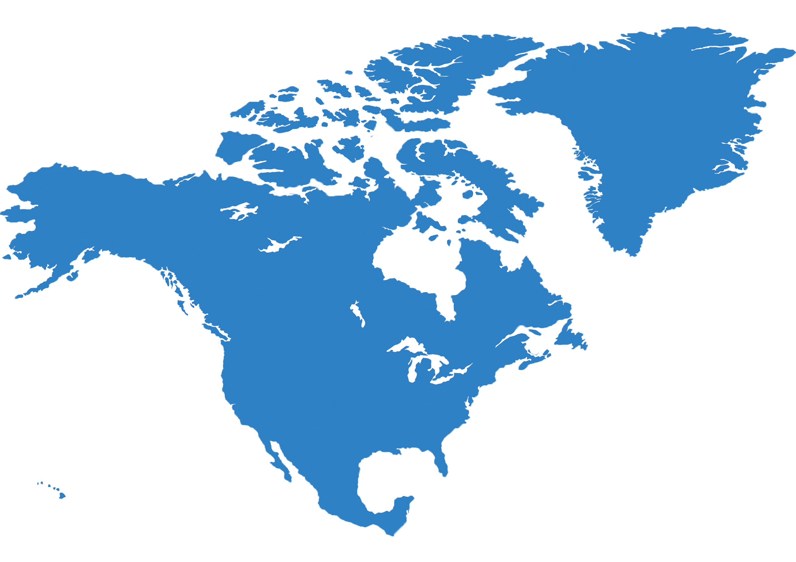

América do Norte
Países
A América do Norte é um subcontinente formado por 4 países: Canadá, Estados Unidos, Dinamarca (Groenlândia) e México. Na América do Norte se encontra maior fronteira em termos de extensão do planeta, entre os Estados Unidos e o Canadá.
Economia
A economia da América do Norte caracteriza-se por uma grande diversidade de produtos e serviços, por uma forte utilização de tecnologia e por uma mão de obra, em geral, especializada. Percebe-se também uma grande disparidade regional quando comparamos a capacidade produtiva dos países ao norte, Canadá e Estados Unidos, e o México, ao sul.
Cultura
Em virtude de sua grande extensão territorial e uma enorme pluralidade cultural, visto a presença de inúmeras etnias no país, bem como milhares de estrangeiros, os Estados Unidos são um dos países de maior diversidade. Pessoas no mundo todo sofrem influência da cultura norte-americana na gastronomia, moda, esporte e entretenimento. Os estadunidenses são uma das maiores potências olímpicas, apresentando fortes equipes em diversos esportes. E quem nunca comeu um fast-food? Sanduíches, batata frita, bacon são símbolos da culinária no país e difundiram-se pelo mundo todo.
Política
Em nível federal, o poder executivo é exercido pelo Presidente, eleito por um colégio eleitoral, o poder legislativo pertence ao Congresso e o poder judiciário pertence aos tribunais. Cada estado elege ainda o seu próprio governador (chefe do executivo) e um congresso. Ainda há a possibilidade de, durante o pleito presidencial, os eleitores de um Estado aprovarem ou não projetos de lei relativos a diversas questões.
Geografia
"Estados Unidos ou Estados Unidos da América (EUA), como é chamado oficialmente, são um país localizado no continente americano (subcontinente América do Norte). O país é considerado o mais influente do mundo e exerce forte domínio político, econômico, militar e cultural."
Curiosidades
- O continente sede de um dos maiores destinos turísticos do mundo oferece refil de refrigerantes à vontade.
- Localizado na fronteira entre os Estados Unidos e o Canadá, o Lago Superior é o segundo maior lago de água doce do mundo em extensão.
- Os impostos são calculados diretamente no caixa e o valor muda de acordo com a região onde você realiza a compra.
- Mais da metade dos residentes no Canadá possuem ensino superior completo e as universidades do país estão entre as melhores do mundo.